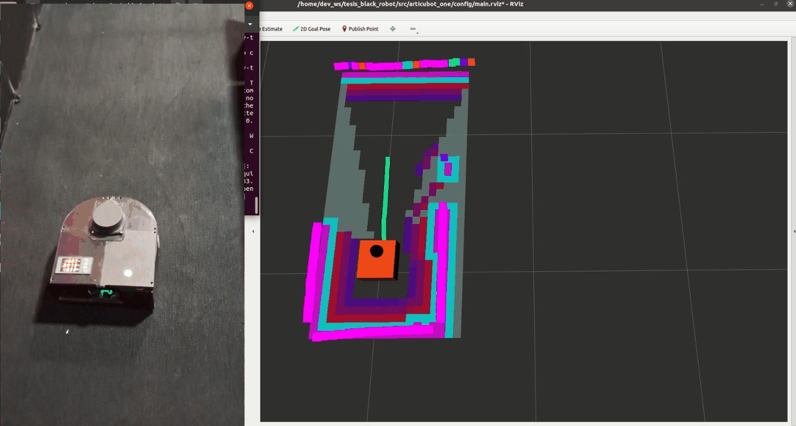
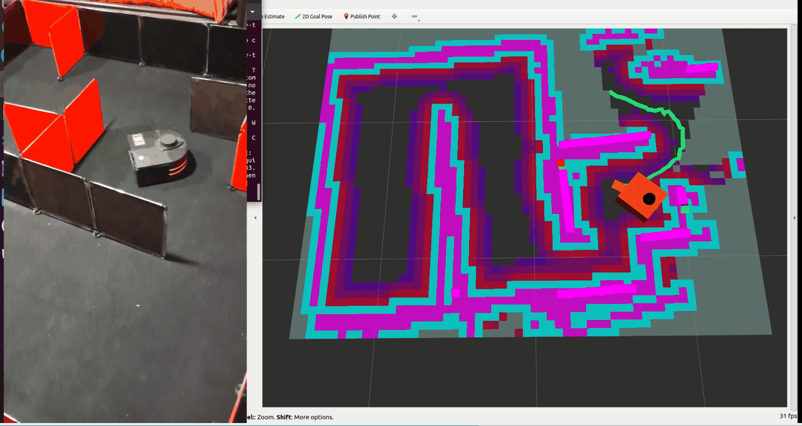

Medido contra una referencia independiente
Con repeticiones y una referencia externa al propio sistema. Ejemplo, la odometría frente a una cinta métrica, cinco veces.
Evidencia y práctica
Un resultado vale tanto como la forma en que se midió. Este tema reúne lo que demuestra el trabajo, con qué nivel de evidencia, qué quedó parcial, dónde fallaría el robot y qué viene después.
Sí fue posible mapear y explorar un interior con un robot de bajo costo. Cinco de seis ejecuciones produjeron un mapa válido y terminaron solas, sin intervención. La odometría quedó validada con mediciones, el control se evaluó en el robot real y el mapeo, la navegación y la exploración quedaron verificados en funcionamiento. Dos objetivos se cumplieron y dos quedaron parciales, y explico por qué con datos.
Uso tres niveles de evidencia, y entenderlos es la mejor forma de leer los resultados. La diferencia de fondo es la que hace el manual de ingeniería de sistemas de la NASA entre verificar, que es comprobar que se cumplen los requisitos especificados, y validar, que es demostrar que el producto cumple su propósito en el entorno real 2.
Con repeticiones y una referencia externa al propio sistema. Ejemplo, la odometría frente a una cinta métrica, cinco veces.
Con indicadores reales, pero en un caso particular. Ejemplo, el control de velocidad a 0,13 m/s.
Sin un indicador cuantitativo de desempeño. Ejemplo, la navegación hacia las metas del explorador.
En este sitio cada resultado dice en cuál de los tres niveles está.
| Subsistema | Estado | Evidencia y lo que falta |
|---|---|---|
| Odometría | Validada cuantitativamente | Recta de 2 m, cinco repeticiones, error medio de 3,63 % frente a cinta. En simulación no hubo referencia independiente y el giro no mide error odométrico angular. |
| Control de velocidad | Evaluado experimentalmente | Captura real en lazo cerrado a 0,13 m/s, error estacionario de 0,002 m/s o menos, sin sobreimpulso apreciable. Un solo punto de operación. |
| SLAM | Verificado y caracterizado | Cobertura y área libre en cinco iteraciones. Paredes evaluadas a la vista, sin un plano medido para el error absoluto. |
| Nav2 | Verificada funcionalmente | Ejecutó 59 metas del explorador. 53 de 54 abortos fueron reemplazos, así que no hay tasa de éxito. Metas fijas fuera del alcance. |
| Exploración | Verificada funcionalmente | Cinco de seis ejecuciones terminaron solas con mapa válido. Cobertura media de 62,2 % y área libre media de 3,50 m². |
| Localización | Verificada funcionalmente | Resuelta por slam_toolbox durante el mapeo. AMCL sobre un mapa guardado no se ensayó. |
El video de la cabecera muestra una ejecución de demostración sobre el robot real. A la izquierda, el robot visto desde arriba. A la derecha, RViz con el mapa que se va construyendo y, en verde, la ruta hacia la frontera elegida. El mapa crece a medida que el láser ve geometría nueva, que es la evidencia de que el robot se desplaza 3.


Las cifras de esta página vienen de ensayos con registro. El video sirve para verlas funcionando.
Respecto de la pregunta de investigación, la respuesta es afirmativa para mapear y explorar en el entorno ensayado. La navegación funciona de extremo a extremo, y lo que queda abierto es medirla con un protocolo de metas fijas 1.
Tres lecturas apresuradas que conviene evitar. Decir que el robot cubre el 62 % del recinto, cuando ese índice depende del tamaño de la imagen. Decir que solo una de cada sesenta metas se cumplió, cuando 53 de los 54 abortos fueron reemplazos. Y decir que el robot exploró todo el recinto, cuando lo que se sabe es que no quedaron fronteras y que las cinco corridas llegaron a la misma área libre.
Estas son las limitaciones que reconoce la tesis 1.
Sin unidad inercial, la odometría acumula error en giros y recorridos largos.
3,50 m² de área libre media y cinco iteraciones. No se generaliza a espacios mayores, y la superficie del recinto no se midió aparte del mapa.
Los contadores no identificaban metas únicas y el resultado se reconstruyó después. No hay tasa de éxito ni error de posición final hacia metas fijas.
Opera como PI incremental y no se comparó con un PID incremental estándar. Los sobreimpulsos simulados no se mezclan con la medición real.
ROS 2 Foxy y Gazebo Classic ya no reciben soporte oficial.
Lectura no atómica de encoders, PSO sin semilla fija, puntaje de fronteras con unidades mezcladas y metas reemplazadas que entran a la lista negra.
Imagina llevar el robot a una oficina con sillas, mesas, ventanales y gente caminando. Estos son los problemas que anticipo.
Las mesas y sillas son el primer problema. El láser ve un solo plano, así que detecta las patas pero no la cubierta ni el asiento. Los ventanales y las superficies muy reflectantes o muy absorbentes degradan la medición. El sistema no está pensado para personas que se mueven rápido. En pasillos estrechos el radio de inflación es menor que el alcance de la esquina del robot y nada revisa la huella completa. Y en una oficina grande, más recorrido significa más deriva sin unidad inercial, mientras que ni la autonomía de la batería ni la carga del computador se midieron.
Propongo nueve líneas de trabajo, en este orden. Cada una es un buen punto de partida para otro proyecto de título o para un curso.
Si quieres tomar uno de estos puntos, Constrúyelo tú reúne lo necesario para empezar, y en el repositorio del sitio puedes dejar una nota de lo que estás haciendo.